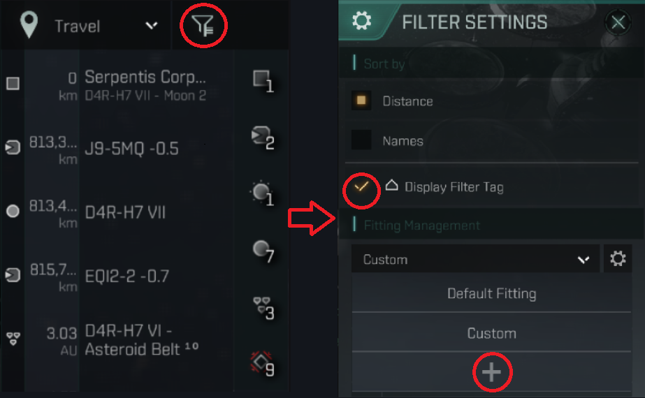
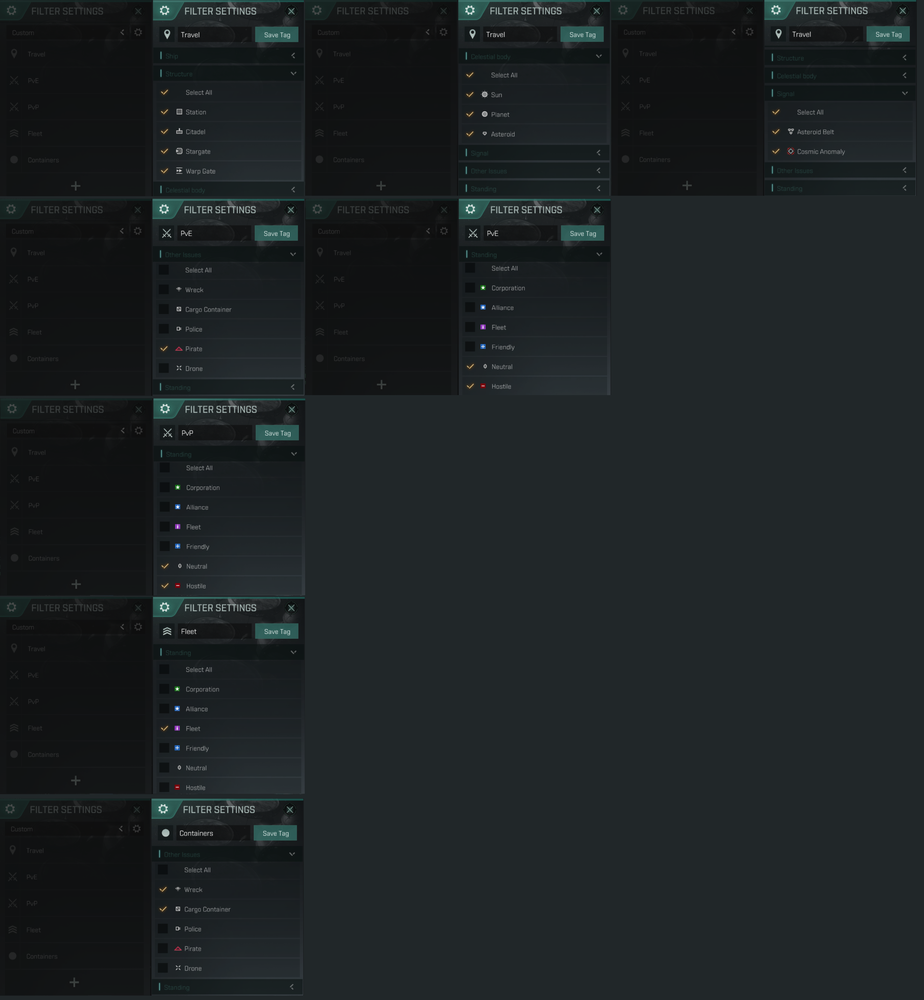
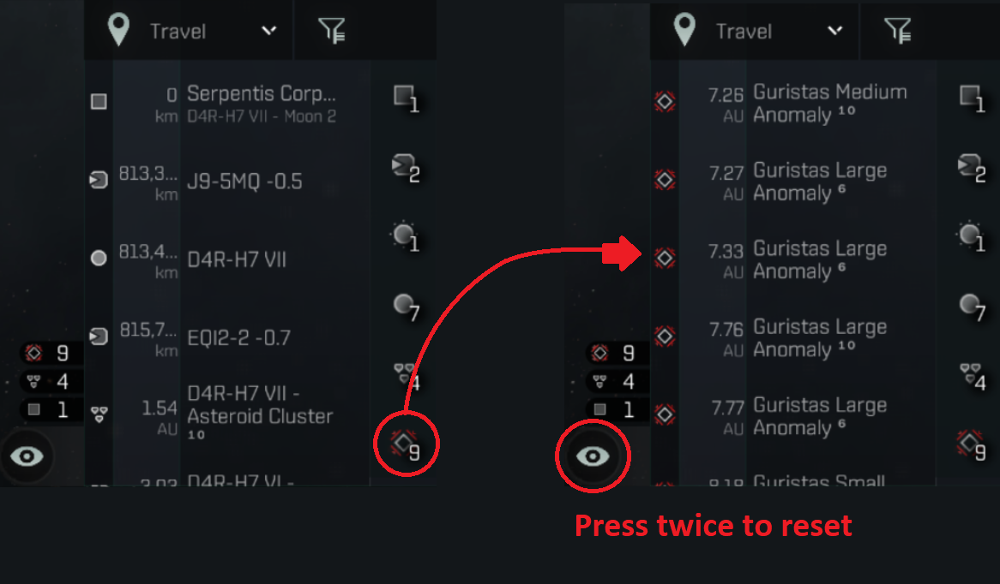

Overview Settings
Your overview window is the primary interface
you use to interact with the environment when
you are out in space. It tracks all objects/players
in space, what they are, and how far they are from
you. The default settings the game provides are
adequate, but to improve efficiency and to block out
unnecessary information in hectic times of combat,
it is a good idea to set up a custom overview, or at
least understand overview filters work. To access your
overview settings, un-dock into space and press this button
at the top left of your overview menu

It is recommended you create one tab for each of the following activities:
Travel
- filters for all points of interest in space that
you are able to warp to. You may wish to create a
separate tab for each type of object you can warp for,
i.e. one tab for Stations, one tab for System Gates etc.
With the Display Tag filter this is not strictly necessary.
PvE
- filters out all except hostile enemy NPC. This clears a
lot of clutter compared to the default one that the game
provides. Additionally, you can add a filter to display
other player pilots that are only neutral or hostile, which
is important for situational awareness when you are doing
PvE in low-security space. and keeping an eye out for when
players warp into your anomaly.
PvP
- filters out all except hostile enemy players.
This is self explanatory. If you are flying with us in a
PvP roam fleet, you need to have this tab ready for situational
assessment and target acquisition.
Fleet
- filters out all except players in your fleet.
Not strictly necessary right now, but will become
more important if we begin to run large scale ops
that necessitate things like anchoring or warping to
other players.
Misc
- convenience tab for objects that you only occasionally
need to interact with. For me this is all shipwrecks and
loot-able containers.
Friendlies
- optional tab for players in corp, in our alliance,
or have good standing with us. Not strictly necessary
in my opinion as the Fleet tab will cover most situations
when you need to interact with other friendly ships.
All
- optional tab that contains every object. For times where
you just can't find something in any of your other tabs.
Below is the current recommended corporation setup for overviews.
You may feel free to add more, but please have these tabs
configured so our fleet commanders know everyone is on the same
page with their overview info. (TODO: CONFIRM WITH OTHER
OFFICERS AND LEADERSHIP)

You can also message any officer in game and we can send
the custom overview to you directly.
Resetting Filters
The filter tab on your overview allows you to quickly select
one type of object in space and exclude all others.
It’s not recommended to use this to filter between friendlies
and foes in combat as you may forget what you’re filtering
and miss key information because it was not on your overview.
However, in some circumstances it is useful to save having to
make another overview tab for. The Travel tab for instance,
makes great use of this.
